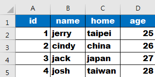
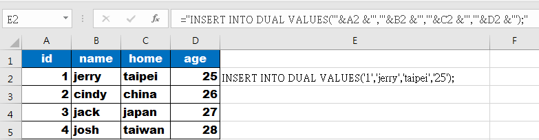
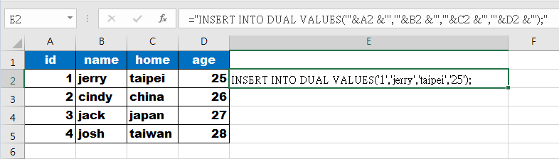
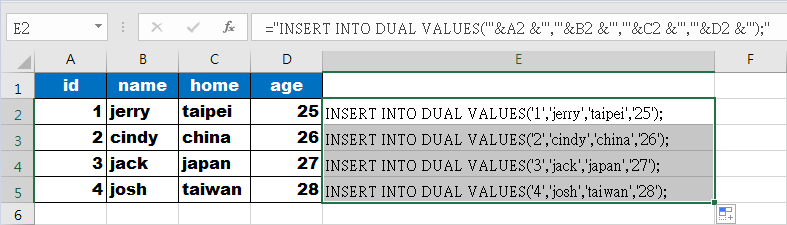

Jerry
Excel 轉 SQL 小工具
輸入table名稱 :
輸入column數量 :(目前最大支援到26)
轉換結果：
Demo：
假設現在有一個Excel資料，有人叫你塞進去table裡

可以看到有A、B、C、D共四個欄位，在上方輸入TABLE NAME、欄位輸入4會產生以下SQL
="INSERT INTO DUAL VALUES('"&A2 &"','"&B2 &"','"&C2 &"','"&D2 &"');"
然後把SQL貼到EXCEL的第五個欄位，就會帶出結果

點格子出現綠框後把綠點後往下拉，可自動帶出所有值，然後就可以複製E欄到SQL的Commander上執行了
 